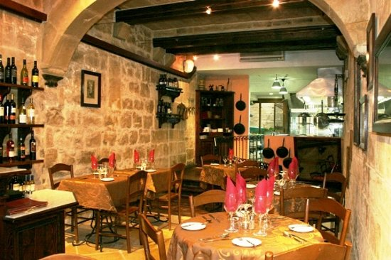

During my trip to Valletta, I tried some awesome local restaurants!
First, I went to MUŻA Restaurant, which is actually part of the Malta National Museum of Art.
It’s a very cool spot because you can walk around the museum and then grab a meal there.
They serve traditional Maltese dishes with a modern twist. I tried their rabbit stew, which is a Maltese classic, and it was so flavorful.
Plus, the setting is super cozy and artsy, with views of the museum courtyard, so it really adds to the experience. Overall, the experience was great, Solid 9/10.

Then I headed to Papannis Restaurant. It’s tucked away in one of the side streets of Valletta, and it has this warm, intimate vibe.
The pasta there was incredible. I tried the seafood linguine, and it was full of fresh seafood straight from the ocean.
The staff was so friendly too, it felt like eating at a family friend’s place. If you love Italian food, then this is definitely a spot to check out.

Lastly, I stopped by Mina’s for a more laid-back experience. This place has such a welcoming, local feel to it, and the food was delicious.
I went for the ftira, which is a traditional Maltese sandwich with fresh bread, tomatoes, capers, and tuna.
It was so simple but packed with flavor. Mina’s also had some really good pastries, so I got to try the pastizzi, flaky pastries filled with ricotta cheese, which were perfect for a quick snack.